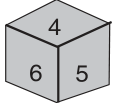
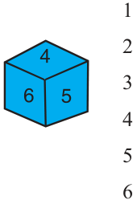
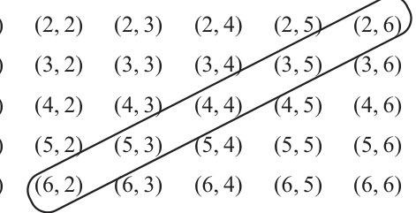

PROBABILITY
The theory of probabilities and the theory of errors now constitute a formidable body of great mathematical interest and of great practical importance.
Let us consider the following situation : Suppose a coin is tossed at random.
When we speak of a coin, we assume it to be ‘fair’, that is, it is symmetrical so that there is no reason for it to come down more often on one side than the other. We call this property of the coin as being ‘unbiased’. By the phrase ‘random toss’, we mean that the coin is allowed to fall freely without any bias or interference.
We know, in advance, that the coin can only land in one of two possible ways - either head up or tail up (we dismiss the possibility of its ‘landing’ on its edge, which may be possible, for example, if it falls on sand). We can reasonably assume that each outcome, head or tail, is as likely to occur as the other. We refer to this by saying that the outcomes head and tail, are equally likely. For another example of equally likely outcomes, suppose we throw a die once. For us, a die will always mean a fair die. What are the possible outcomes? They are 1, 2, 3, 4, 5, 6. Each number has the same possibility of showing up. So the equally likely outcomes of throwing a die are 1, 2, 3, 4, 5 and 6.
Are the outcomes of every experiment equally likely? Let us see. Suppose that a bag contains 4 red balls and 1 blue ball, and you draw a ball without looking into the bag. What are the outcomes? Are the outcomes \(- a\) red ball and a blue ball equally likely? Since there are 4 red balls and only one blue ball, you would agree that you are more likely to get a red ball than a blue ball. So, the outcomes (a red ball or a blue ball) are not equally likely. However, the outcome of drawing a ball of any colour from the bag is equally likely. So, all experiments do not necessarily have equally likely outcomes. However, in this chapter, from now on, we will assume that all the experiments
have equally likely outcomes.
In Class IX, we defined the experimental or empirical probability P(E) of an event E as
Number of trials in which the event happened P(E) = Total number of trials
The empirical interpretation of probability can be applied to every event associated with an experiment which can be repeated a large number of times. The requirement of repeating an experiment has some limitations, as it may be very expensive or unfeasible in many situations. Of course, it worked well in coin tossing or die throwing experiments. But how about repeating the experiment of launching a satellite in order to compute the empirical probability of its failure during launching, or the repetition of the phenomenon of an earthquake to compute the empirical probability of a multi- storeyed building getting destroyed in an earthquake? In experiments where we are prepared to make certain assumptions, the repetition of an experiment can be avoided, as the assumptions help in directly calculating the exact (theoretical) probability. The assumption of equally likely outcomes (which is valid in many experiments, as in the two examples above, of a coin and of a die) is one such assumption that leads us to the following definition of probability of an event. The theoretical probability (also called classical probability) of an event E, written as P(E), is defined as
P(E) = Number of outcomes favourable to E , Number of all possible outcomes of the experiment
where we assume that the outcomes of the experiment are equally likely. We will briefly refer to theoretical probability as probability. This definition of probability was given by Pierre Simon Laplace in 1795.
Probability theory had its origin in the 16th century when an Italian physician and mathematician J.Cardan wrote the first book on the subject, The Book on Games of Chance. Since its inception, the study of probability has attracted the attention of great mathematicians. James Bernoulli \((1654 - 1705)\), A. de Moivre \((1667 - 1754)\), and Pierre Simon Laplace are among those who made significant contributions to this field. Laplace’s Theorie Analytique des Probabilités, 1812, is considered to be the greatest contribution by a single person to the theory of probability. Pierre Simon Laplace In recent years, probability has been used extensively in \((1749 - 1827)\) many areas such as biology, economics, genetics, physics, sociology etc.
Let us find the probability for some of the events associated with experiments where the equally likely assumption holds.
Example 1 : Find the probability of getting a head when a coin is tossed once. Also find the probability of getting a tail.
Solution : In the experiment of tossing a coin once, the number of possible outcomes is two - Head (H) and Tail (T). Let E be the event ‘getting a head’. The number of outcomes favourable to E, (i.e., of getting a head) is 1. Therefore,
Number of outcomes favourable to E P(E) \(= P\) (head) = Number of all possible outcomes \(= \frac{1}{2}\)
Similarly, if F is the event ‘getting a tail’, then
P(F) = P(tail) \(= \frac{1}{2}\) (Why ?)
Example 2 : A bag contains a red ball, a blue ball and a yellow ball, all the balls being of the same size. Kritika takes out a ball from the bag without looking into it. What is the probability that she takes out the
- (i)yellow ball? (ii) red ball? (iii) blue ball?
Solution : Kritika takes out a ball from the bag without looking into it. So, it is equally likely that she takes out any one of them.
Let Y be the event ‘the ball taken out is yellow’, B be the event ‘the ball taken out is blue’, and R be the event ‘the ball taken out is red’.
Now, the number of possible outcomes \(= 3\).
- (i)The number of outcomes favourable to the event \(Y = 1\).
So, P(Y) \(= \frac{1}{3}\)
Similarly, (ii) P(R) \(= \frac{1}{3}\) and (iii) P(B) \(= \frac{1}{3} \cdot\)
Remarks :
- 1.An event having only one outcome of the experiment is called an elementary
event. In Example 1, both the events E and F are elementary events. Similarly, in Example 2, all the three events, Y, B and R are elementary events.
- 2.In Example 1, we note that : P(E) + P(F) \(= 1\)
In Example 2, we note that : P(Y) + P(R) + P(B) \(= 1\) Observe that the sum of the probabilities of all the elementary events of an experiment is 1. This is true in general also.
Example 3 : Suppose we throw a die once. (i) What is the probability of getting a number greater than 4 ? (ii) What is the probability of getting a number less than or equal to 4 ?
Solution : (i) Here, let E be the event ‘getting a number greater than 4’. The number of possible outcomes is six : 1, 2, 3, 4, 5 and 6, and the outcomes favourable to E are 5 and 6. Therefore, the number of outcomes favourable to E is 2. So,
P(E) = P(number greater than \(4) = \frac{2}{6} = \frac{1}{3}\)
- (ii)Let F be the event ‘getting a number less than or equal to 4’.
Number of possible outcomes \(= 6\)
Outcomes favourable to the event F are 1, 2, 3, 4.
So, the number of outcomes favourable to F is 4.
Therefore, P(F) \(= \frac{4}{6} = \frac{2}{3}\)
Are the events E and F in the example above elementary events? No, they are not because the event E has 2 outcomes and the event F has 4 outcomes. Remarks : From Example 1, we note that
P(E) + P(F) \(= \frac{1}{2} + \frac{1}{2} = 1 (1)\)
where E is the event ‘getting a head’ and F is the event ‘getting a tail’. From (i) and (ii) of Example 3, we also get
P(E) + P(F) \(= \frac{1}{3} + \frac{2}{3} = 1 (2)\)
where E is the event ‘getting a number >4’ and F is the event ‘getting a number \(\le\) 4’. Note that getting a number not greater than 4 is same as getting a number less than or equal to 4, and vice versa. In (1) and (2) above, is F not the same as ‘not E’? Yes, it is. We denote the event ‘not E’ by E .
So, P(E) + P(not E) \(= 1\)
i.e., P(E) + P( E ) \(= 1\), which gives us P( E ) \(= 1 -\) P(E).
In general, it is true that for an event E,
P( E ) \(= 1 -\) P(E)
The event E , representing ‘not E’, is called the complement of the event E. We also say that E and E are complementary events. Before proceeding further, let us try to find the answers to the following questions:
- (i)What is the probability of getting a number 8 in a single throw of a die?
- (ii)What is the probability of getting a number less than 7 in a single throw of a die?
Let us answer (i) :
We know that there are only six possible outcomes in a single throw of a die. These outcomes are 1, 2, 3, 4, 5 and 6. Since no face of the die is marked 8, so there is no outcome favourable to 8, i.e., the number of such outcomes is zero. In other words, getting 8 in a single throw of a die, is impossible.
So, P(getting \(8) = \frac{0}{6} = 0\)
That is, the probability of an event which is impossible to occur is 0. Such an event is called an impossible event.
Let us answer (ii) :
Since every face of a die is marked with a number less than 7, it is sure that we will always get a number less than 7 when it is thrown once. So, the number of favourable outcomes is the same as the number of all possible outcomes, which is 6. Therefore, P(E) = P(getting a number less than \(7) = \frac{6}{6} = 1\) So, the probability of an event which is sure (or certain) to occur is 1. Such an event is called a sure event or a certain event.
Note : From the definition of the probability P(E), we see that the numerator (number of outcomes favourable to the event E) is always less than or equal to the denominator (the number of all possible outcomes). Therefore,
\(0 \le\) P(E) \(\le 1\)
Now, let us take an example related to playing cards. Have you seen a deck of playing cards? It consists of 52 cards which are divided into 4 suits of 13 cards each - spades ( ), hearts ( ), diamonds ( ) and clubs (•). Clubs and spades are of black colour, while hearts and diamonds are of red colour. The cards in each suit are ace, king, queen, jack, 10, 9, 8, 7, 6, 5, 4, 3 and 2. Kings, queens and jacks are called face cards.
Example 4 : One card is drawn from a well-shuffled deck of 52 cards. Calculate the probability that the card will
- (i)be an ace,
- (ii)not be an ace.
Solution : Well-shuffling ensures equally likely outcomes.
- (i)There are 4 aces in a deck. Let E be the event ‘the card is an ace’.
The number of outcomes favourable to \(E = 4\)
The number of possible outcomes \(= 52\) (Why ?)
Therefore, P(E) \(= \frac{4}{52} = \frac{1}{13}\)
- (ii)Let F be the event ‘card drawn is not an ace’.
The number of outcomes favourable to the event \(F = 52 - 4 = 48\) (Why?)
The number of possible outcomes \(= 52\)
Therefore, P(F) \(= \frac{48}{52} = \frac{12}{13}\)
Remark : Note that F is nothing but E . Therefore, we can also calculate P(F) as
follows: P(F) = P( E ) \(= 1 -\) P(E) \(= 1 - \frac{1}{13} = \frac{12}{13} \cdot\)
Example 5 : Two players, Sangeeta and Reshma, play a tennis match. It is known that the probability of Sangeeta winning the match is 0.62. What is the probability of Reshma winning the match?
Solution : Let S and R denote the events that Sangeeta wins the match and Reshma wins the match, respectively. The probability of Sangeeta’s winning = P(S) \(= 0.62\) (given) The probability of Reshma’s winning = P(R) \(= 1 -\) P(S)
\(= 1 - 0.62 = 0.38\)
Example 6 : Savita and Hamida are friends. What is the probability that both will have (i) different birthdays? (ii) the same birthday? (ignoring a leap year). Solution : Out of the two friends, one girl, say, Savita’s birthday can be any day of the year. Now, Hamida’s birthday can also be any day of 365 days in the year. We assume that these 365 outcomes are equally likely.
- (i)If Hamida’s birthday is different from Savita’s, the number of favourable outcomes
for her birthday is \(365 - 1 = 364\)
So, P (Hamida’s birthday is different from Savita’s birthday) \(= \frac{364}{365}\)
- (ii)P(Savita and Hamida have the same birthday)
\(= 1 - P\) (both have different birthdays)
\(= 1 - \frac{364}{365}\) [Using P( E ) \(= 1 -\) P(E)] \(= \frac{1}{365}\)
Example 7 : There are 40 students in Class X of a school of whom 25 are girls and 15 are boys. The class teacher has to select one student as a class representative. She writes the name of each student on a separate card, the cards being identical. Then she puts cards in a bag and stirs them thoroughly. She then draws one card from the bag. What is the probability that the name written on the card is the name of (i) a girl?
- (ii)a boy?
Solution : There are 40 students, and only one name card has to be chosen.
- (i)The number of all possible outcomes is 40
The number of outcomes favourable for a card with the name of a girl \(= 25\) (Why?) Therefore, P (card with name of a girl) = P(Girl) \(= \frac{25}{40} = \frac{5}{8}\)
- (ii)The number of outcomes favourable for a card with the name of a boy \(= 15\) (Why?)
Therefore, P(card with name of a boy) = P(Boy) \(= \frac{15}{40} = \frac{3}{8}\) Note : We can also determine P(Boy), by taking
P(Boy) \(= 1 -\) P(not Boy) \(= 1 -\) P(Girl) \(= 1 - \frac{5}{8} = \frac{3}{8}\)
Example 8 : A box contains 3 blue, 2 white, and 4 red marbles. If a marble is drawn at random from the box, what is the probability that it will be
- (i)white? (ii) blue? (iii) red?
Solution : Saying that a marble is drawn at random is a short way of saying that all the marbles are equally likely to be drawn. Therefore, the number of possible outcomes \(= 3 +2 + 4 = 9\) (Why?) Let W denote the event ‘the marble is white’, B denote the event ‘the marble is blue’ and R denote the event ‘marble is red’.
- (i)The number of outcomes favourable to the event \(W = 2\)
So, P(W) \(= \frac{2}{9}\)
Similarly, (ii) P(B) \(= \frac{3}{9} = \frac{1}{3}\) and (iii) P(R) \(= \frac{4}{9}\)
Note that P(W) + P(B) + P(R) \(= 1\).
Example 9 : Harpreet tosses two different coins simultaneously (say, one is of ` 1 and other of ` 2). What is the probability that she gets at least one head? Solution : We write H for ‘head’ and T for ‘tail’. When two coins are tossed simultaneously, the possible outcomes are (H, H), (H, T), (T, H), (T, T), which are all equally likely. Here (H, H) means head up on the first coin (say on ` 1) and head up on the second coin (` 2). Similarly (H, T) means head up on the first coin and tail up on the second coin and so on. The outcomes favourable to the event E, ‘at least one head’ are (H, H), (H, T) and (T, H). (Why?)
So, the number of outcomes favourable to E is 3.
Therefore, P(E) \(= \frac{3}{4}\)
i.e., the probability that Harpreet gets at least one head is \(\frac{3}{4} \cdot\) Note : You can also find P(E) as follows:
P (E) \(= 1 -\) P(E) \(= 1 - \frac{1}{4} = \frac{3}{4}\) Since P(E) = P(no head) \(= \frac{1}{4}\)
Did you observe that in all the examples discussed so far, the number of possible outcomes in each experiment was finite? If not, check it now. There are many experiments in which the outcome is any number between two given numbers, or in which the outcome is every point within a circle or rectangle, etc. Can you now count the number of all possible outcomes? As you know, this is not possible since there are infinitely many numbers between two given numbers, or there are infinitely many points within a circle. So, the definition of (theoretical) probability which you have learnt so far cannot be applied in the present form. What is the way out? To answer this, let us consider the following example : Example 10* : In a musical chair game, the person playing the music has been advised to stop playing the music at any time within 2 minutes after she starts playing. What is the probability that the music will stop within the first half-minute after starting?
Solution : Here the possible outcomes are all the numbers between 0 and 2. This is the portion of the number line from 0 to 2 (see Fig. 14.1).
Fig. 14.1
- *Not from the examination point of view.
Let E be the event that ‘the music is stopped within the first half-minute’.
The outcomes favourable to E are points on the number line from 0 to \(\frac{1}{2}\) . The distance from 0 to 2 is 2, while the distance from 0 to \(\frac{1}{2}\) is \(\frac{1}{2}\) . Since all the outcomes are equally likely, we can argue that, of the total distance of 2, the distance favourable to the event E is \(\frac{1}{2}\) .
So, P(E) = Total distance inDistance favourablewhich outcomes can lieto the event \(E = \frac{1}{2} 2 = \frac{1}{4}\)
Can we now extend the idea of Example 10 for finding the probability as the ratio of the favourable area to the total area?
Example 11* : A missing helicopter is reported to have crashed somewhere in the rectangular region shown in Fig. 14.2. What is the probability that it crashed inside the lake shown in the figure?
Solution : The helicopter is equally likely to crash anywhere in the region. Area of the entire region where the helicopter can crash
\(= (4.5 \times 9) km^{2} = 40.5 km^{2}\)
- *Not from the examination point of view.
Area of the lake \(= (2.5 \times 3) km^{2} = 7.5 km^{2}\)
Therefore, P (helicopter crashed in the lake) \(= \frac{7.5}{40.5} = \frac{75}{405} = \frac{5}{27}\)
Example 12 : A carton consists of 100 shirts of which 88 are good, 8 have minor defects and 4 have major defects. Jimmy, a trader, will only accept the shirts which are good, but Sujatha, another trader, will only reject the shirts which have major defects. One shirt is drawn at random from the carton. What is the probability that
- (i)it is acceptable to Jimmy?
- (ii)it is acceptable to Sujatha?
Solution : One shirt is drawn at random from the carton of 100 shirts. Therefore, there are 100 equally likely outcomes.
- (i)The number of outcomes favourable (i.e., acceptable) to Jimmy \(= 88\) (Why?)
Therefore, P (shirt is acceptable to Jimmy) \(= \frac{88}{100} = 0.88\)
- (ii)The number of outcomes favourable to Sujatha \(= 88 + 8 = 96\) (Why?)
So, P (shirt is acceptable to Sujatha) \(= \frac{96}{100} = 0.96\)
Example 13 : Two dice, one blue and one grey, are thrown at the same time. Write down all the possible outcomes. What is the probability that the sum of the two numbers appearing on the top of the dice is
- (i)8? (ii) 13? (iii) less than or equal to 12?
Solution : When the blue die shows ‘1’, the grey die could show any one of the numbers 1, 2, 3, 4, 5, 6. The same is true when the blue die shows ‘2’, ‘3’, ‘4’, ‘5’ or ‘6’. The possible outcomes of the experiment are listed in the table below; the first number in each ordered pair is the number appearing on the blue die and the second number is that on the grey die.


(1, 1) (1, 2) (1, 3) (1, 4) (1, 5) (1, 6)

(2, 1)
(3, 1)
(4, 1)
(5, 1)
(6, 1)
Fig. 14.3
Note that the pair (1, 4) is different from (4, 1). (Why?)
So, the number of possible outcomes \(= 6 \times 6 = 36\).
- (i)The outcomes favourable to the event ‘the sum of the two numbers is 8’ denoted
by E, are: (2, 6), (3, 5), (4, 4), (5, 3), (6, 2) (see Fig. 14.3)
i.e., the number of outcomes favourable to \(E = 5\).
Hence, P(E) \(= \frac{5}{36}\)
- (ii)As you can see from Fig. 14.3, there is no outcome favourable to the event F,
‘the sum of two numbers is 13’.
So, P(F) \(= \frac{0}{36} = 0\)
- (iii)As you can see from Fig. 14.3, all the outcomes are favourable to the event G,
‘sum of two numbers £ 12’.
So, P(G) \(= \frac{36}{36} = 1\)